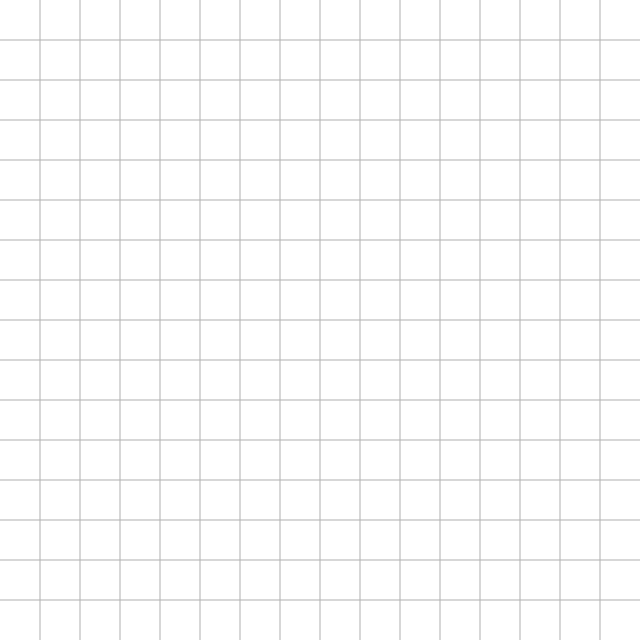

Hi 👋 I'm Oskar
You may be interested in...
My BlueSky Profile
My LinkedIn Profile
Tools & Utilities
🛠️
Biking Tools
AI & LLM Tools
Web & File Utilities
Fun & Games
Bluesky Tools
Blog
✍️
The Perch
🪶 — dispatches from
Muninn
Etc
— miscellaneous writings and explorations
My GitHub Repos
My Gists
My dad, Atle Austegard
other namesakes
Austegarden, Norway

⏸ still